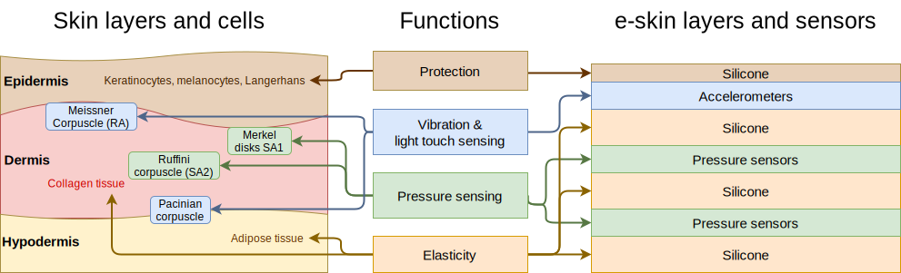

Home
Welcome
Thiiis is the home page for our Modular and Scalable Soft e-Skin project. We draw inspiration from the layered structure of human skin to create a sensor array that can measure both normal and shear forces as well as vibrations in robotic applications. Our approach emphasises:
- Modularity – Easy to add or remove layers and sensors.
- Scalability – Straightforward to expand the sensor arrays with simplified electronics.
- Accessibility – Employing off-the-shelf components and standard silicone moulding.
Have a look at our project summary for the main technical details, or head directly to the tutorial page to build your own!
